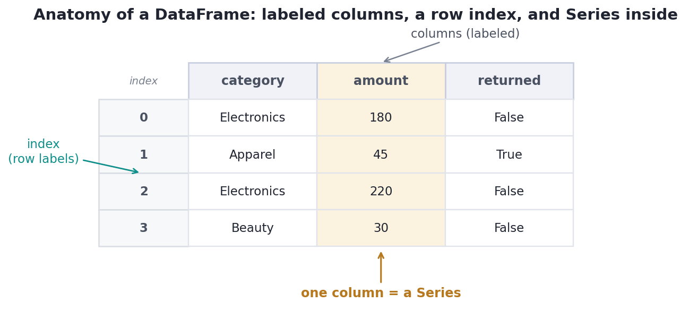
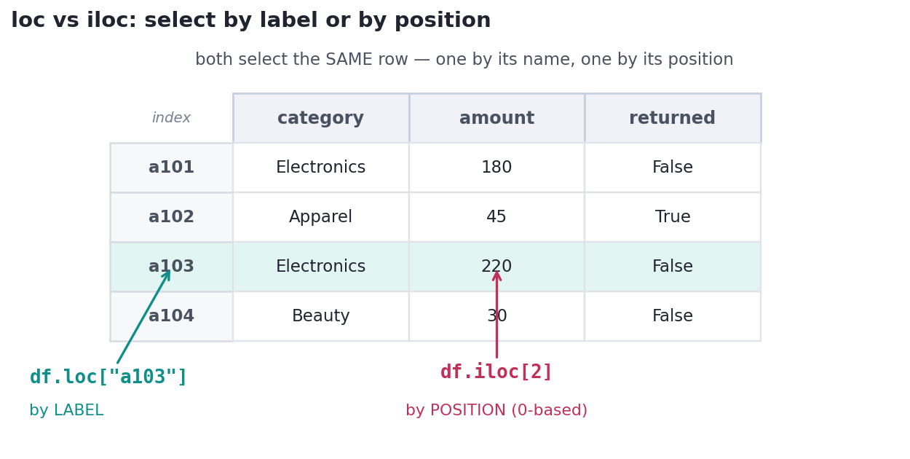

Pandas: Series & DataFrames
The spreadsheet-in-code you'll live in: Series, DataFrames, selecting, and filtering with boolean masks.
Pandas is where you'll spend most of your data-science life. It's a spreadsheet that lives in code: NumPy's speed, plus labeled rows and columns and a deep toolbox for loading, cleaning, and reshaping real data. If you become fluent in one library, make it this one — every later track assumes it.
Concept · the two objectsSeries and DataFrame
Pandas has exactly two core objects, and everything is built from them:
- A Series is a one-dimensional labeled array — essentially a NumPy array with an index (row labels) bolted on. Think of it as a single column.
- A DataFrame is a two-dimensional table — a collection of Series that share one index. Think of it as a whole spreadsheet: labeled columns, labeled rows.

Concept · first contactReading and inspecting data
You'll usually create a DataFrame by reading a file: pd.read_csv("orders.csv") (and siblings read_excel, read_sql). The moment you load data, inspect it — the same first-contact ritual from the capstone:
df.head()— the first few rowsdf.shape— (rows, columns)df.dtypes/df.info()— the type of each columndf.describe()— quick summary statisticsdf.isna().sum()— missing values per column
Concept · the daily movesSelecting data: columns, rows, and masks
Four selection patterns cover almost everything:
- A column:
df["amount"]returns that Series. - By label with
.loc:df.loc[2, "amount"]— row labeled 2, column 'amount'. - By position with
.iloc:df.iloc[0]— the first row, regardless of its label. - By boolean mask:
df[df["amount"] > 100]— the rows where the test is True. This is the exact NumPy idea from last lesson, now filtering rows of a table.

loc vs. iloc. loc selects by the label in the index; iloc selects by integer position. They often differ — here label "a103" and position 2 happen to be the same row, but with a sorted or filtered index they won't be.The classic beginner mix-up: .loc is label-based and its slices are inclusive (df.loc[0:2] returns labels 0, 1, and 2), while .iloc is position-based and exclusive like normal Python (df.iloc[0:2] returns positions 0 and 1). When in doubt, ask yourself: am I using a name or a position?
Worked exampleA DataFrame, end to end
Build a small DataFrame, inspect it, filter with a mask, and add a computed column — the core loop you'll repeat thousands of times.
import pandas as pd
import numpy as np
df = pd.DataFrame({
"category": ["Electronics", "Apparel", "Electronics", "Beauty", "Apparel"],
"amount": [180, 45, 220, 30, 95],
"returned": [False, True, False, False, True],
})
print("shape:", df.shape)
# Filter rows with a boolean mask, then pick two columns.
big = df[df["amount"] > 100]
print("\norders over $100:")
print(big[["category", "amount"]].to_string(index=False))
# Add a computed column: net = amount unless the order was returned.
df["net"] = np.where(df["returned"], 0, df["amount"])
print("\nnet revenue per order:", df["net"].tolist(), "-> total $%d" % df["net"].sum())shape: (5, 3) orders over $100: category amount Electronics 180 Electronics 220 net revenue per order: [180, 0, 220, 30, 0] -> total $430
Notice how close this reads to plain English: the rows where amount exceeds 100, net is zero if returned else the amount. That readability, on top of NumPy speed, is why Pandas is the workhorse — and why the cleaning and reshaping in the next lessons feel natural.
Interactive labYour turn — work a real DataFrame
The DataFrame df has columns customer, category, amount. Assign to answer the category with the highest total revenue (a string).
df → 8 rows of customer / category / amount, already loaded..idxmax().answer = df.groupby('category')['amount'].sum().idxmax()groupby(...).sum() gives revenue per category; .idxmax() returns the winning label.
★ Key points to remember
- A Series is one labeled column; a DataFrame is a table of Series sharing an index.
- Load with
pd.read_csv(...), then inspect:.head(),.shape,.dtypes/.info(),.describe(),.isna().sum(). - Select a column with
df["col"]; rows by label with.loc, by position with.iloc. - Filter rows with a boolean mask:
df[df["x"] > k]— the NumPy idea, applied to tables. .locis label-based with inclusive slices;.ilocis position-based with exclusive slices.
country equals 'US'. Which expression is correct?df.loc[0:2] and df.iloc[0:2] on a default-indexed DataFrame return different numbers of rows. Why?.loc label-slicing is inclusive (rows 0,1,2); .iloc position-slicing is exclusive (rows 0,1).iloc is inclusive and .loc is exclusive.loc only works on stringsdf["amount"]?◆ Practice▸
email column only for rows where active is True.Show solution & reasoning
df.loc[df["active"], "email"]. The boolean Series df["active"] selects the rows, and .loc[rows, "email"] picks the column — returning the emails of active users as a Series. (df[df["active"]]["email"] also works but chained indexing is best avoided; see the deep dive.)
df["price"].sum() returns a concatenated string like '19.9929.99...' instead of a number. What happened, and how do you check and fix it?Show solution & reasoning
The price column was read as text (dtype object), so + concatenates strings instead of adding. Check with df.dtypes (or df.info()); you'll see object rather than float64. Fix with df["price"] = pd.to_numeric(df["price"], errors="coerce"), which converts to numbers (turning any unparseable entries into NaN to handle next). Always verify dtypes right after loading.
◎ Deep dive: the power of the index, chained-indexing pitfalls, and .str/.dt accessors▸
The index is a feature, not decoration. A DataFrame's index can be meaningful — dates for a time series, customer IDs, a multi-level (hierarchical) index for grouped data. A good index makes lookups, joins, and time-based slicing fast and expressive (df.loc["2025-03"] to grab March). Setting the right index with set_index is often the first step that makes later code clean.
Chained indexing and SettingWithCopyWarning. Writing df[df.x > 0]["y"] = 5 chains two indexing operations, and pandas can't tell if you're editing the original or a temporary copy — so the assignment may silently do nothing, and you get a SettingWithCopyWarning. The fix is a single .loc: df.loc[df.x > 0, "y"] = 5. When you genuinely want a separate DataFrame, call .copy() explicitly (the reference trap again).
Vectorized string and date accessors. Pandas extends vectorization to text and time via .str and .dt: df["city"].str.strip().str.lower() cleans an entire column at once, and df["signup"].dt.month extracts the month from a whole date column. No loops — the same array-thinking from NumPy, now for strings and timestamps. You'll lean on these constantly in the next lesson.
Pandas questions are ubiquitous: 'filter these rows,' 'add this column,' 'what's the difference between loc and iloc?' Answer the last one crisply — loc is label-based and inclusive, iloc is position-based and exclusive — and always inspect dtypes after loading, since a numeric column read as text is the single most common real-world gotcha.